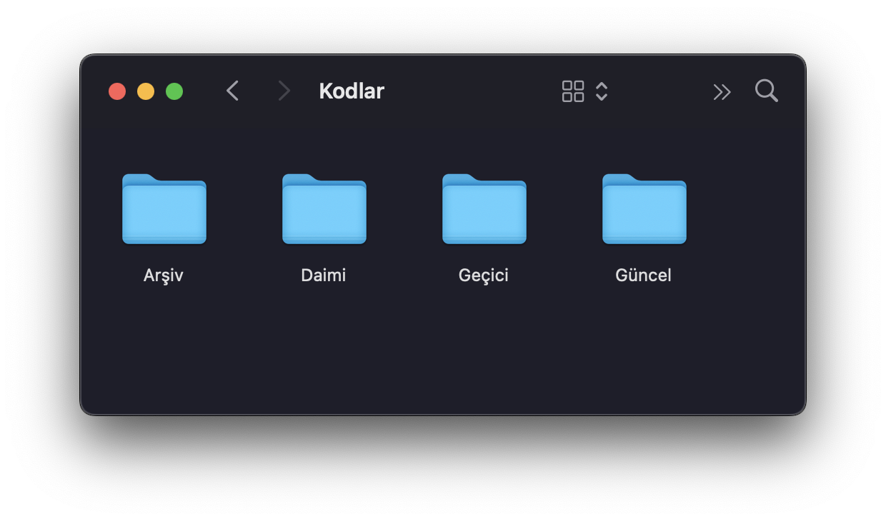

Kod Repolarını Diskimde Nasıl Saklıyorum?
OSX kullanıyorsanız fark etmişsinizdir grafik arayüzün gösterdiği klasör isimlerine terminalden ulaşamıyorsunuz. Grafik arayüzde "Belgeler" olarak görüntülediğiniz klasör terminelde ulaşmaya çalıştığınızda Documents oluveriyor. Kullandığım klasör yapısı da buna uygun olsun istedim. "Code" adlı bir klasörüm olsun ama tıpkı sistemdeki diğer klasörler gibi buna grafik arayüzden eriştiğimde "Kodlar" olarak gözüksün dedim. Şu anki durum şöyle:

Aynı klasörü terminalden listelediğimde ise şöyle bir sonuç alıyorum:

Osx'de bir klasörün sonuna .localized ekleyerek, içerisine .localized
adında bir klasör ekleyip onun da içerisine tr.strings adında bir dosya
koyarak o klasörün grafik arayüzde Türkçe gözükmesini sağlayabiliyorsunuz. Bir
örnek yapalım. Ships adında bir klasörümüz olsun, ama finder bunu Gemiler
olarak göstersin istiyoruz diyelim.
mkdir -p Ships.localized/.localized/
Buradaki -p parametresi bir kısayol, fazla iç içe klasör oluşturabilmemizi
sağlıyor. Bunu kullanmamış olsaydık önce Ships.localized klasörünü sonra da
onun içindeki .localized klasörünü oluşturmamız gerekecekti.
Şimdi de .localized klasörünün içerisindeki tr.strings dosyasına Ships
kelimesini Gemiler olarak göstermesi gerektiğini anlatan satırı koyalım:
echo '"Ships" = "Gemiler"' > Ships.localized/.localized/tr.strings
Bunu yaptığımızda finder penceresinin artık Ships klasörünü Gemiler olarak gösterdiğini göreceğiz.
Bu özelliği kullanarak Code klasörümü yerelleştirdikten sonra şöyle alt klasörlere ayırma yoluna gittim:

Kısaca açıklamak gerekirse Daimi (Permanent) klasöründe ne olursa olsbun çalışmaya devam ettiğim blogum, internetguzeldir gibi repolar duruyor. Güncel (Current) klasöründe o ara çalıştığım iş ne varsa o. Arşiv ve Geçici klasörlerini de tahmin edersiniz zaten.
Sizin de kullandığınız başka düzenler varsa, ya da bu çirkin .localized klasör soyadını kullanmadan yerelleştirme yapabiliyorsanız yorum atabilirsiniz.
Kolay gelsin.